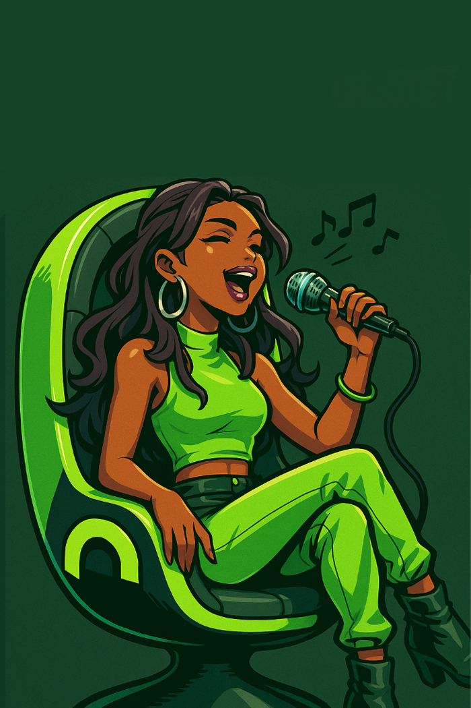
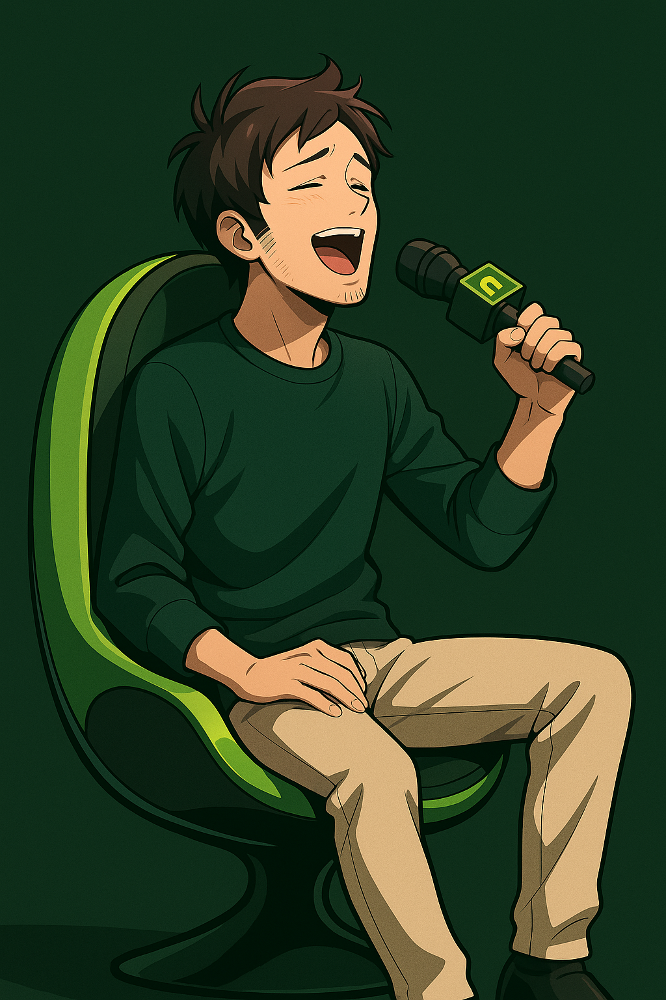
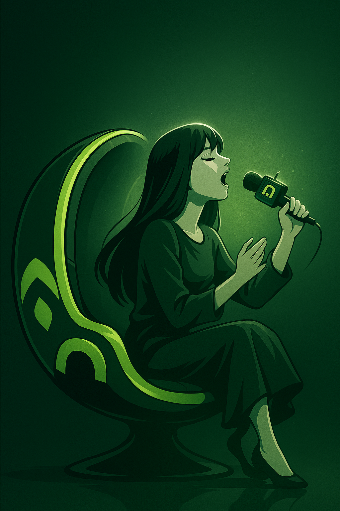
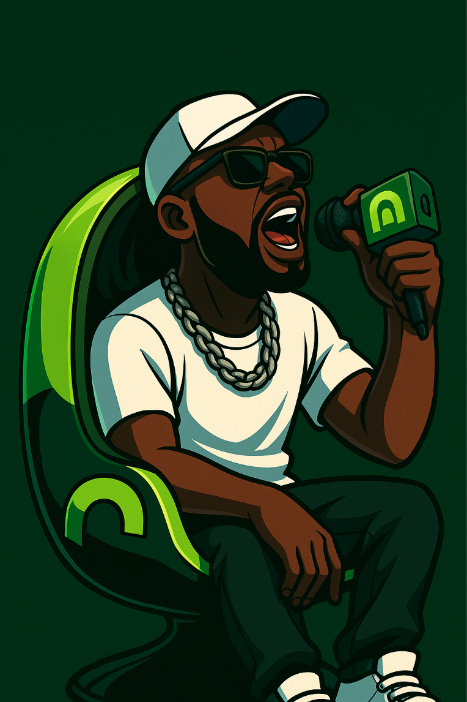
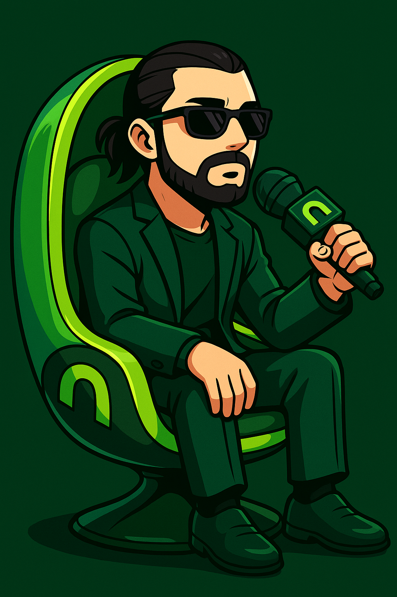

Les artistes en vue en 2025 par genre
Variété Française

représentation artistique IA
Aya Nakamura
Chanteuse R&B et pop urbaine.

représentation artistique IA
Vianney
Auteur-compositeur-interprète connu pour ses textes.

représentation artistique IA
Clara Luciani
Clara se fait connaître avec son groupe de rock français "La Femme", Auteure-compositrice-interprète, musicienne, actrice.
Hip-Hop

représentation artistique IA
Ninho
Rappeur français à succès, hits puissants et réguliers.

représentation artistique IA
SCH
Un style unique entre rap et mélodies..
 Lomepal
Lomepal
Fusionne rap et chanson avec des textes profonds.
Electro
 Madeon
Madeon
Producteur français, électro mélodique et futuriste.
 The Blaze
The Blaze
Duo électro français avec un style cinématographique.
 Polo & Pan
Polo & Pan
Électro-pop solaire aux influences exotiques.
Rock
 Shaka Ponk
Shaka Ponk
Groupe rock alternatif à l’énergie débordante.
 Muse
Muse
Rock progressif britannique, toujours en tournée mondiale.
Jazz
 Youn Sun Nah
Youn Sun Nah
Chanteuse de jazz coréenne, très active en France.
Blues
 Eric Bibb
Eric Bibb
Blues acoustique inspirant et engagé.
Reggae
 Naâman
Naâman
Reggae français moderne et énergique.
Classique
Techno
 Nina Kraviz
Nina Kraviz
Techno minimale et sonorités industrielles.
 Amelie Lens
Amelie Lens
Une figure montante de la scène techno mondiale.
Musiques du monde
 Ibeyi
Ibeyi
Duo franco-cubain mêlant électro, chants yoruba et soul.
 Tinariwen
Tinariwen
Groupe touareg, mélange de blues du désert et tradition.